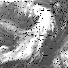
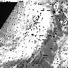

![[Left]](../pics/left.gif)
![[Up]](../pics/up.gif)
![[Right]](../pics/right.gif)
![[Home]](../pics/home.gif)

These images come from satellites which remain above a fixed point on the Earth
(ie. they are "geostationary"). The visible picture shows a black and white version
of what a person sitting on satellite would see. The infrared picture shows
the same view but looking at a part of the spectrum which our eyes do not detect.
The infrared pictures allow us to measure the temperature of the cloud tops, which can be
used to determine their height, and also are available thoughout the day and night.
Visible pictures are only available during daylight hours.
These images are in JPEG format and occupy about 75 KBytes. The Infrared image should be updated with the 00:00, 06:00, 12:00 and 18:00 GMT pictures at about 30 mins. past the hour and the Visible updated once per day at about 12:30 GMT with the 12:00 GMT picture.
Latest Infrared Satellite Picture
Latest Visible Satellite Picture